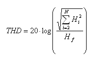

Total Harmonic Distortion (THD)
The total harmonic distortion (THD) is the ratio of the rms sum of the first N harmonic components to the rms value of the fundamental of the output signal. THD is expressed in db.

Hf is the fundamental of the output signal.
n is the number of harmonics.
Hi (i=2...N) are the harmonics of the output signal.